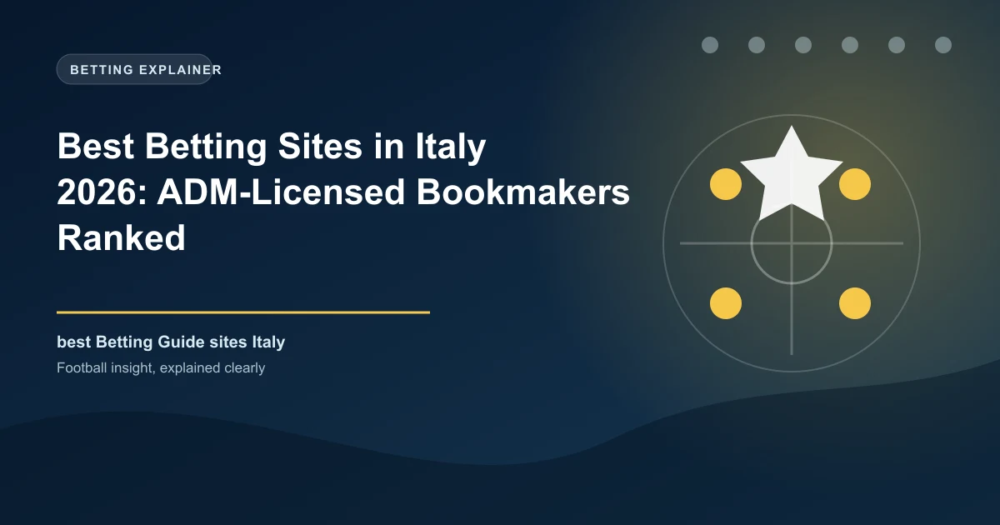

Best Betting Sites in Italy 2026: ADM-Licensed Bookmakers Ranked

Italy runs one of Europe's richest betting markets, restructured in 2025 around 52 new ADM concessions and a single-domain rule that wiped hundreds of legacy skins. Betting is legal, licensed and heavily taxed - but only on sites that hold an ADM concession.

Italian betting is big business - stakes of more than 150 billion euros a year, an online market worth billions in gross gaming revenue, and a legal framework rebuilt from 2024 to 2026 around a new concession system. The headline change is simple: from late 2025 there are 52 ADM concessions held by 46 operators, one domain each, and every brand without a concession is illegal in Italy. Here is the best of the legal market in 2026.
Italy Betting at a Glance
| Factor | Detail |
|---|---|
| Currency | Euro (EUR) |
| Regulator | ADM - Agenzia delle Dogane e dei Monopoli, under Decree 41/2024 |
| Legal online betting | Yes - 52 concessions (46 operators), single-domain rule since late 2025 |
| Online casino and poker | Legal under the same concessions |
| Minimum age | 18 |
| Tax (2026) | 24.5% of GGR online sports betting; 25.5% online casino/poker/bingo; players' winnings tax-free |
| Advertising | Total ban on gambling ads since 2018 (Dignity Decree) |
| Population | About 59 million |
| Main sports | Football - Serie A, Serie B; basketball, tennis, F1 |
Know the Rules: ADM and the 2025 Concession Reboot
The modern Italian regime comes from Legislative Decree 41/2024, which implemented a complete redesign of gambling concessions after approval from the European Commission. The new tender, launched in December 2024, awarded 52 concessions in September 2025 to 46 operators at 7 million euros each. It also introduced the single-domain rule: each concession runs exactly one brand on one domain, and the old practice of one concession operating dozens of skins disappeared - more than 400 legacy sites collapsed into about 52 regulated domains. Old concessions ran until November 2025, with the new regime live from then.
Online betting, online casino, poker and bingo are all legal under the same concessions, minimum age is 18, and the national Lotto draw remains a separate concession (won for nine years to 2034 by the IGT-led Lottomatica consortium). The ad ban from the 2018 Dignity Decree remains fully in force.
Tax: The 2026 Rates
Italy taxes operators, not winners. Since the 2025 Budget Law the online sports-betting rate is 24.5% of gross gaming revenue (up from 24%), online casino, poker and bingo pay 25.5% (up from 25%), and retail betting sits at 20.5%. Licensed-operator winnings are tax-free for players, and the state also collects a 0.2% GGR contribution for responsible gambling plus an annual net-revenue levy. Gambling taxes brought the treasury about 6.7 billion euros in 2025 - roughly 1% of state revenue - so the sector is structurally important to Italy's budget.
The Best Licensed Bookmakers in Italy, Ranked
Concession numbers are issued per award and are checked on the ADM register; in public sources the brand-level grant number is often not listed, so verify any operator name directly on the ADM portal before depositing. All of the following are 2025 concession holders or their approved brands:
| Operator | Known For | Concession |
|---|---|---|
| Sisal | Retail and online market leader, Serie A sponsor | 2025 ADM concession (Flutter) |
| SNAI / Snaitech | Huge retail network, strong in-play | 2025 ADM concession (Flutter) |
| Lottomatica (Goldbet, Better) | Multi-brand sports and casino depth | 2025 ADM concession |
| Eurobet | Entain group, football-first app | 2025 ADM concession |
| bet365 | Global live-streaming and cash-out leader | 2025 ADM concession (5 licences historically) |
| Betfair / PokerStars | Exchange betting and poker powerhouse | 2025 ADM concession (Flutter) |
| Winamax | French entrant, sharp tennis and football prices | 2025 ADM concession |
Sisal is the safe default for Italian football: one of the oldest brand names in the country, Serie A title sponsorship and the biggest retail-to-online funnel. SNAI and Lottomatica balance one another on breadth, Eurobet is the mobile-first football app most fans already know, and bet365 brings the deepest live offering. Planetwin365, William Hill, 888, Stake, Marathonbet, Dazn Bet and Codere round out a field of 46 concession holders. Nothing outside the ADM list is legitimate: foreign-licensed brands without a concession are considered illegal, are blacklisted, and face payment blocking.
Payments for Italian Bettors
Expect PostePay prepaid cards, PayPal, Visa and Mastercard (including CartaSi/Nexi), plus bank transfer and Skrill at most operators. Retail top-up through PVR points (tobacconists and bars) remains popular, but from May 2026 cash top-ups through those shops are capped at 100 euros a week under new anti-money-laundering rules. Unlicensed sites are cut off at the payment level by ADM enforcement, which is another reason to stay inside the concession list.
Bonuses and the Market in 2026
The new single-domain regime made the market more transparent and the bonuses more standardised: welcome offers of matched deposit bets with roughly 20-30 times wagering, tied to Serie A and Champions League. Because every operator answers to ADM and the advertising ban prevents brand visibility, comparison is best done on odds and withdrawal speed rather than marketing. Set a monthly budget, hold your stakes, and treat reload offers as short-term value only.
Responsible Gambling in Italy
Every licensed Italian operator must offer self-exclusion, deposit and time limits, and contribute to the national responsible-gambling fund. Use the operator tools early, keep your weekly and monthly stakes predictable, and never bet money you need for bills. If gambling stops being entertainment, professional help is available through the public health network - indirect, free of industry influence, and a call away.
Frequently Asked Questions
Is online betting legal in Italy?
Yes. Online sports betting, casino, poker and bingo are legal under ADM concessions. Since late 2025 the market runs on 52 concessions held by 46 operators, each with a single regulated domain.
How did the 2025 concession reform change things?
The previous system let one concession run many brands or skins. The new Decree 41/2024 tender awarded 52 concessions at 7 million euros each in September 2025, enforcing a single-brand, single-domain rule that reduced more than 400 legacy sites to about 52 regulated domains.
Which betting sites are licensed in Italy?
The licensed field includes Sisal, SNAI (Snaitech), Lottomatica (Goldbet and Better), Eurobet, bet365, Betfair, PokerStars, Winamax, Planetwin365, William Hill, 888, Stake, Marathonbet and Codere. All 46 concession holders are listed on the ADM register - only those hold legal status.
Do Italian players pay tax on betting winnings?
No. Licensed-operator winnings are tax-free for players. Instead operators pay 24.5% of gross gaming revenue on online sports betting and 25.5% on online casino, poker and bingo as of 2026, with higher rates before the 2025 Budget Law.
Is there a ban on gambling advertising in Italy?
Yes. The Dignity Decree (2018) imposes a total ban on gambling advertising and sponsorship in Italy, which remains fully in force through 2026, covering media, sponsorship and influencer promotion.
Put These Principles Into Practice Today
Every strategy on this page is only as good as the markets you apply it to. Check the latest predictions, odds, and in-play opportunities below.
Last updated: August 2026 | By Tochukwu Mesigo |
Build Winning Accumulator Tickets
Generate optimized accumulator combinations from today's data-driven predictions. Set your target odds and get instant ticket suggestions.
Pro Ticket Builder →